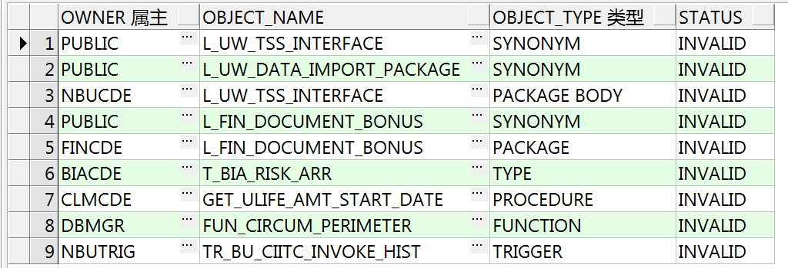
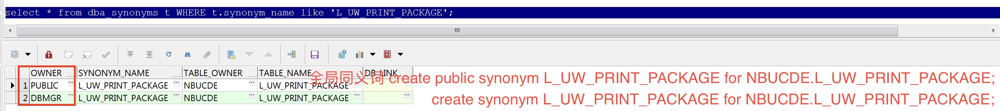

Oracle 查找 处理 失效对象
查找失效对象
-- dba管理员账户执行
SELECT t.OWNER, t.OBJECT_NAME, t.OBJECT_TYPE, t.status
FROM dba_objects t
WHERE t.status = 'INVALID';
查询结果如下:

处理 package body | package 失效
1. 在PLSQL 中 Objects-Package | Objects-Package bodies 中找到这个对象
2. 如果对象上这个 ❌ ，右键 Edit,然后重新编译该 package 或 package body，看编译是否有报错和那个 ❌ 是否消失。(一般情况下，代码如果正确，重新编译一下pkg就可以了)
-- 删除 package body
drop package body NBUCDE.l_uw_print_package;
-- 删除 package
drop package NBUCDE.l_uw_print_package;
处理 synonym 失效
-- 查找同义词
select * from dba_synonyms t WHERE t.synonym_name like 'L_UW_PRINT_PACKAGE';

-- 删除全局同义词
drop public synonym L_UW_PRINT_PACKAGE;
-- 删除同义词
drop synonym L_UW_PRINT_PACKAGE;
--创建全局同义词
create public synonym L_UW_PRINT_PACKAGE for NBUCDE.L_UW_PRINT_PACKAGE;
--创建同义词
create synonym L_UW_PRINT_PACKAGE for NBUCDE.L_UW_PRINT_PACKAGE;